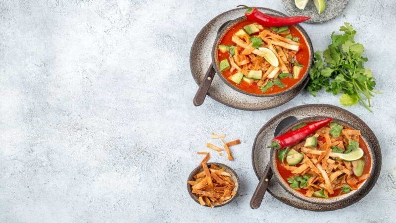

Sopa de tortilla o sopa azteca, una delicia con todo lo rico de México
Publicado por Paulina Cocina / 10 de abril de 2023
This is a Front-End development and web design portfolio project made by Eleonora Rodriguez.
Check the the original website so you can compare it to the changes I've made in this rework.
All images, videos, and recipes belong to Paulina Cocina.
¡Hola a todos y todas, bienvenidos al mundo de Paulina Cocina! Hoy les quiero contar todo acerca de la sopa azteca o sopa de tortilla, un manjar mexicano que sintetiza gran parte de los sabores y colores de México en un plato.
Esta sopa más que una sopa es una comida bien completa, que no necesita acompañamientos. Está hecha con ingredientes súper sabrosos como las tortillas, el tomate, el queso y el aguacate, que además de ser ricos se pueden encontrar muy fácilmente en los hogares mexicanos.
Así que, ¡manos a la sopa!
Sopa azteca: una sopa bien acompañada
La sopa de tortilla, también conocida como sopa azteca, es un plato muy emblemático de la cultura gastronómica mexicana. Su historia se remonta a la época prehispánica, pero su resultado es la mezcla de sabores que las diferentes tradiciones culinarias le fueron dando a la cocina de México.
Su nombre hace referencia a su ingrediente principal: las tortillas, que se fríen y se sirven en un caldo hecho con tomate. Se puede acompañar con ingredientes como trozos de aguacate (palta), queso, chile, queso y cilantro.
Un plato delicioso que sorprende por la combinación de texturas y colores que lo componen. Además es una receta fácil de preparar, por lo que se convierte en una opción ideal para una comida reconfortante y cálida sin demasiado esfuerzo.
El origen de la sopa de tortilla
Tanto el nombre sopa azteca como sopa de tortilla, son correctos y se utilizan para referirse a la misma sopa. Las tortillas como ingrediente básico de la gastronomía de México, se remonta a la época precolonial, donde los pueblos originarios las utilizaban para elaborar muchos platillos, entre ellos una preparación caldosa hecha con maíz, con ciertas características similares a la que se conoce actualmente como “sopa azteca”.
El lugar de origen de esta preparación nos lleva a Tlaxcala, un estado ubicado al este de la Ciudad de México, en el centro del país. Su nombre significa algo así como “tierra de maíz”, debido a la gran producción de este alimento en las tierras tlaxcaltecas.
Este producto era utilizado para la elaboración de muchísimos de los platillos que, aún hoy, forman parte de la gastronomía mexicana, como las quesadillas, tacos, enchiladas o chilaquiles.
Durante la época colonial, en el siglo XVI, la sopa de tortilla fue influenciada por los ingredientes y técnicas culinarias traídos por los españoles. Se empezaron a añadir nuevos elementos, como el queso, el aguacate (palta) y el chile, que se convirtieron en ingredientes clave de la receta. Sin embargo, la sopa de tortilla es un plato muy versátil, y su preparación puede variar de una región a otra de México.
Si se te hace agua la boca y estas con ganas de activar el modo chef te invito a ver 10 platos tradicionales de la cocina mexicana!
La mejor receta de sopa de tortilla
La sopa azteca, como mencionamos anteriormente, puede variar de una región a otra, por lo que la mejor receta de este platillo dependerá del gusto y la tradición de quien lo prepara. De todos modos hay algunos ingredientes básicos que no pueden faltar, como las tortillas fritas, el jitomate (tomate), el queso, la cebolla, el cilantro y el aguacate (palta).
En algunas partes del país, se utiliza un caldo de jitomate como base, en lugar de uno de pollo, lo que le da un sabor más picante y ácido. En otras regiones se estila usar maíz, frijoles y chiles asados, para darle un sabor ahumado. También se le puede agregar un toque de crema, cilantro, jalapeño, pollo deshebrado (desmenuzado), chicharrón y chile pasilla.
En cualquiera de sus versiones la sopa azteca sintetiza gran parte de los sabores que representan a la gastronomía de México. Es una fiesta para el paladar, con texturas y sabores diferentes como las tortillas fritas crujientes, el aguacate (palta) y el cilantro fresco, el queso cremoso, y los chiles picantes.
El resultado es un sabor realmente único.
Receta de sopa de tortilla o sopa azteca
Porciones:
4
Preparación:
40min
Ingredientes
- 6 tortillas de maíz
- 1 litro de caldo de pollo
- 3 jitomates (tomates)
- 1 cebolla mediana
- 2 dientes de ajo
- 1 jalapeño (opcional)
- Aceite para freír
- Aceite de oliva
- Sal y pimienta a gusto
- Aguacate (palta)
- Queso fresco
- Cilantro fresco
- 1 lima
Cómo se hace la sopa de tortilla paso a paso
- Cortar las tortillas en tiras y freírlas en una sartén con aceite caliente. Cuidado, que no se doren demasiado. Quitar el exceso de aceite con papel absorbente y reservar.
- En una olla, calentar un poco de aceite de oliva y rehogar unos minutos la cebolla, los dientes de ajo y el jalapeño, todo bien picado.
- Agregar los jitomates picados y cocinar unos 10 minutos, hasta que estén suaves.
- Añadir el caldo de pollo y salpimentar a gusto. Dejar cocinar a fuego medio durante 15 minutos.
- Servir la sopa caliente y decorar con las tiras de tortilla fritas, el aguacate en cubos, el queso fresco cortado, el cilantro fresco picado y unos trozos de lima.
Tip importante: los acompañamientos que lleva la sopa de tortilla también pueden servirse en un plato aparte para que cada comensal elija los de su gusto.
Mas recetas con éstos ingredientes:
- Ajo
- Cebolla
- Palta
- Queso
- Tomate